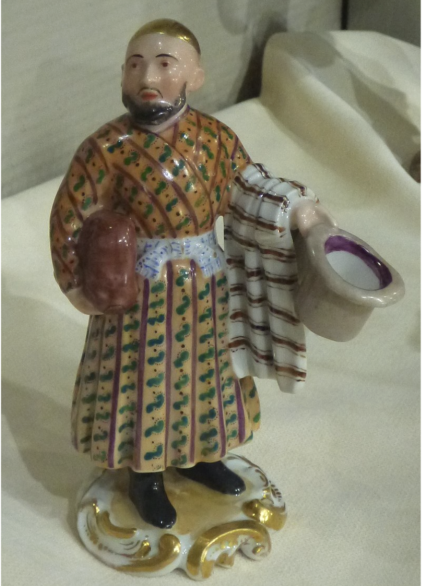
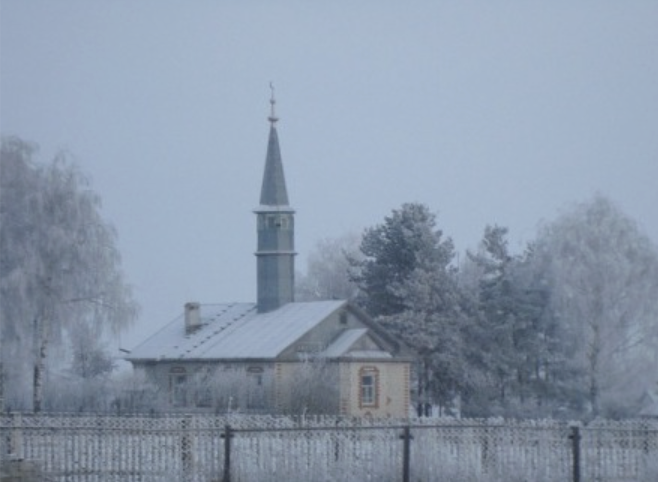
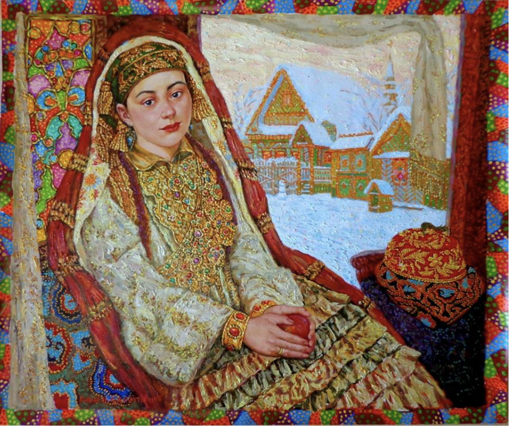

Старотатарский язык (урало-поволжский тюрки, старобашкирский язык[47]; тат. Иске Татар әдәби теле, İske Tatar ädäbi tele, ایسكی تاتار تلی, башк. Иҫке башҡорт теле[48]) — тюркский литературный язык, на котором писали с XIV по XX вв., использовавшийся различными народами. Сформировался в послемонгольский период как ответвление от языка тюрки. Несмотря на наличие нескольких региональных вариантов, существовала их общность, обусловленная близостью тюркских языков друг другу; использованием арабского письма, в котором гласные не находили полного отражения в графике, и поэтому одно и то же слово в различных регионах могло читаться по-разному, и обилием арабо-персидских лексических заимствований.
Татары говорят на татарском языке кыпчакской подгруппы тюркской группы алтайской семьи. Литературный язык татар сформировался на основе казанского диалекта с морфологической структурой мишарского.
С X века по 1927 год существовала письменность на основе арабской графики, с 1928 по 1936 годы использовалась латинская графика (яналиф), с 1936 года вплоть до настоящего времени используется письменность на кириллической графической основе. Существуют планы перевода татарской письменности на латиницу.
Есть школьное образование на татарском языке — ведётся по общероссийской программе и учебникам, переведённым на татарский язык. Исключения: учебники и уроки русского языка и литературы, английского языка и других европейских языков, команды на уроках физкультуры могут быть на русском языке. Также есть татароязычное образование на некоторых факультетах КГАСУ[49] и в детских садах. До революции 1917 года роль образовательных учреждений выполняли медресе.
Традиционным жилищем татар Поволжья и Приуралья была срубная изба, отгороженная от улицы забором. Внешний фасад украшался многоцветной росписью. Татарская архитектура в её современном виде формировалась на протяжении столетий, в древнейшие времена, в период Золотой Орды, Татарских ханств и Российской империи.
Одежда мужчин и женщин состояла из шаровар с широким шагом и рубашки (у женщин дополнялась вышитым нагрудником), на которую надевался безрукавный камзол. Верхней одеждой служили казакин, а зимой — стёганый бешмет или шуба. Головной убор мужчин — тюбетейка, а поверх неё — полусферическая шапка на меху или войлочная шляпа; у женщин — вышитая бархатная шапочка (калфак) и платок. Традиционная обувь — кожаные ичиги с мягкой подошвой, вне дома на них надевали кожаные калоши. Для костюма женщин было характерно обилие металлических украшений.
Татарские народные песни, схожие с музыкой Востока, объединены пятизвучной системой, где каждый из пяти звуков может быть главным тоном. Эти песни обладают разнообразной орнаментикой, придающей им тянущуюся мелодичность, что приближает их к восточным музыкальным традициям. Орнаментика играет важную роль в улучшении ритмической интонации и придает песням особую красоту. Татарские народные песни подразделяются на эпические (исторические и баиты) и лирические (любовные, бытовые, дружеские, сиротские, колыбельные, шуточные и др.) по тематике и сюжету.
Татарская литература имеет длительную историю. Период наивысшего развития татарской рукописной книги приходится на период расцвета татарской государственности — XIV—XVI века. Кроме того, включает в себя богатое устное народное творчество. Большое количество талантливых татарских писателей и поэтов творили в XIX и XX вв.
Татарская кухня богата традициями, заложенными ещё во времена древнего государства Волжская Булгария. Для татарской кухни характерны мясные супы с мучными заправками, как правило, лапшой (токмач), к праздничному столу подаются пельмени, обязательно в бульоне. С бульоном подают и знаменитые беляши или, как их ещё называют, перемечи. Одним из традиционных блюд является бэлиш. Под влиянием других мусульманских народов в кухне татар появился плов. Татары любят выпечку, орехи и мед. Сладкое лакомство чак-чак получило широкую популярность.
Татарские обряды и праздники разделяются на весенне-летний и осенне-зимний циклы. В первом важными событиями являются Сабантуй и Джиен, связанные с севом. Осенне-зимний цикл не имеет четкого деления, не зависит от земледельческого цикла. В этот период выделяются обряды помощи при трудных работах, особенно при обработке гусей, и праздники, такие как Нардуган (святки) с элементами гадания, а также эпизодическое празднование Нового года.

Фарфоровая статуэтка «Татарин», XIX век

Традиционная деревенская мечеть

А. К. Сайфутдинов Татарская невеста. Казанский кремль